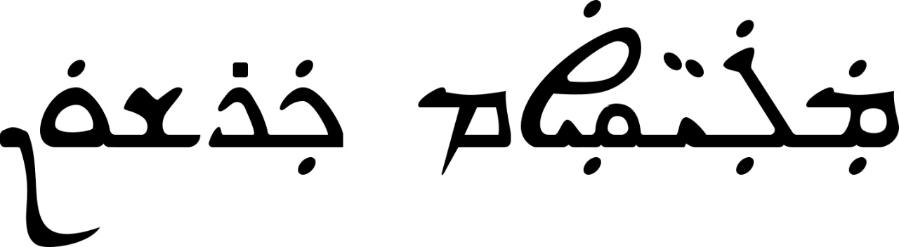

Malayalam - Suriyani Malayalam script correspondence
A comprehensive guide to the correspondence between Modern Malayalam alphabet and Suriyani Malayalam (Karshon) script, with examples of words written in both scripts.
Introduction
Suriyani Malayalam, also known as Karshon or Garshuni Malayalam, is a variant form of the Syriac script that was used to write Malayalam language. It was primarily used by the Saint Thomas Christians (also known as Nasranis) of Kerala until the early 20th century. The script adapts the East Syriac (Madnhaya) script used for Aramaic to write Malayalam, with modifications to represent Malayalam phonology.
This article provides a comprehensive reference table showing the correspondence between Malayalam alphabet and their Suriyani Malayalam equivalents, along with example words written in both scripts.

Script Correspondence Table
The following table shows the correspondence between Malayalam and Suriyani Malayalam alphabets, along with example words in both scripts. Note that some Malayalam characters may have multiple Suriyani Malayalam representations or vice versa, depending on the context and pronunciation.
This is a preliminary list and may be revised. Some entries include question marks or remain blank, indicating areas where further consensus is needed. Reader feedback and suggestions are welcome.
| Malayalam Letter | Suriyani Malayalam Letter | Malayalam Example | Suriyani Malayalam Example |
|---|---|---|---|
| Vowels (സ്വരങ്ങൾ) | |||
| അ | ܐܲ | അച്ഛൻ | |
| ആ | ܐܵ | ആട് | |
| ഇ | ܐܝܼ | ഇല | |
| ഈ | ܐܝܼ | ഈശ്വരൻ | |
| ഉ | ܐܘܼ | ഉണ്ണി | |
| ഊ | ܐܘܼ | ഊരി | |
| എ | ܐܸ | എടുക്കുക | |
| ഏ | ܐܹ | ഏഴ് | |
| ഐ | ܐܵܝ | ഐശ്വര്യം | |
| ഒ | ܐܘܿ | ഒരു | |
| ഓ | ܐܘܿ | ഓട് | |
| ഔ | ܐܵܘ | ഔഷധം | |
| Special Symbols (ചിഹ്നങ്ങൾ) | |||
| ം (anusvāram) | ܡ | നാമം | |
| ഃ (visargam) | ܐ݈ (؟) | ദുഃഖം | |
| Consonants (വ്യഞ്ജനങ്ങൾ) | |||
| ക | ܟ | കടൽ | |
| ഖ | ܩ | ഖഡ്ഗം | |
| ഗ | ܓ | ഗൃഹം | |
| ഘ | ܓ݁ | ഘടിക | |
| ങ | ࡠ | വാങ്മയം | |
| ച | ܫ݁ (؟) | ചായ | |
| ഛ | ܫ̄ (؟) | ഛത്രം | |
| ജ | ࡡ | ജനം | |
| ഝ | ࡡ݁ (؟) | ഝഷം | |
| ഞ | ࡢ | ഞാൻ | |
| ട | ࡣ | പടം | |
| ഠ | ࡣ݁ (؟) | പഠനം | |
| ഡ | ܕ݁ (؟) | ഡാലിയ | |
| ഢ | (؟) | ഢാക്ക | |
| ണ | ࡤ | കണ്ണ് | |
| ത | ܬ | തല | |
| ഥ | ܛ | കഥ | |
| ദ | ܕ | ദിനം | |
| ധ (؟) | ܬ̄ | ധനം | |
| ന | ܢܢ | നൂനം | |
| ഩ | ࡥ | നാമം | |
| പ | ܦ | പക്ഷം | |
| ഫ | ܦ݂ | ഫലം | |
| ബ | ܒ | ബസ് | |
| ഭ | ࡦ | ഭാര്യ | |
| മ | ܡ | മനം | |
| യ | ܝ | യമം | |
| ര | ࡧ | രമണൻ | |
| ല | ܠ | ലത | |
| വ | ܒ݂ | വരവ് | |
| ശ | ܫ | ശരം | |
| ഷ | ࡪ | ഷീല | |
| സ | ܣ | സമം | |
| ഹ | ܗ | ഹരി | |
| ള | ࡨ | കളി | |
| ഴ | ࡩ | മഴ | |
| റ | ܪ | പറവ | |
| Compound Letters (കൂട്ടക്ഷരങ്ങൾ) | |||
| Homogeneous Compound Letters (സ്വവർഗ്ഗകൂട്ടക്ഷരങ്ങൾ) | |||
| ക്ക (ക് + ക) | ܟ̱ | മുക്കുറ്റി | |
| ഗ്ഗ (ഗ് + ഗ) | ܓ̱ | ദുർഗ്ഗ | |
| ങ്ങ (ങ് + ങ) | ࡠ̱ | നല്ലങ്ങ് | |
| ച്ച (ച് + ച) | ܫ̱݁ | കച്ചവടം | |
| ജ്ജ (ജ് + ജ) | ࡡ̱ | രാജ്ജ്യം | |
| ഞ്ഞ (ഞ് + ഞ) | ࡢ̱ | എഞ്ഞാറ് | |
| ട്ട (ട് + ട) | ࡣ̱ | കട്ട | |
| ഡ്ഡ (ഡ് + ഡ) | ഇഡ്ഡലി | ||
| ണ്ണ (ണ് + ണ) | ࡤ̱ | കണ്ണ് | |
| ത്ത (ത് + ത) | ܬ̱ | കത്ത് | |
| ദ്ദ (ദ് + ദ) | ܕ̱ | ശുദ്ധം | |
| ന്ന (ന് + ന) | ࡥ̱ ܢ̱ | ചെന്ന | |
| പ്പ (പ് + പ) | ܦ̱ | അപ്പം | |
| ബ്ബ (ബ് + ബ) | ܒ̱ | റബ്ബി | |
| മ്മ (മ് + മ) | ܡ̱ | അമ്മ | |
| യ്യ (യ് + യ) | ܝ̱ | ഐയ്യപ്പ | |
| ര്ര (ര് + ര) | ࡧ̱ | ശര്രം | |
| ല്ല (ല് + ല) | ܠ̱ | നല്ല | |
| വ്വ (വ് + വ) | ܒ݂̱ | നവ്വ് | |
| ശ്ശ (ശ് + ശ) | ܫ̱ | വിശ്ശാലം | |
| സ്സ (സ് + സ) | ܣ̱ | വിസ്സമയം | |
| ള്ള (ള് + ള) | ࡨ̱ | ഉള്ള | |
| റ്റ (റ് + റ) | ܪ̱ | പറ്റി | |
| Heterogeneous Compound Letters (വർഗേതര കൂട്ടക്ഷരങ്ങൾ) | |||
| ങ്ക (ങ് + ക) | ࡠܟ | ശങ്ക | |
| ഗ്ന (ഗ് + ന) | ܓܢ | വിഗ്നേശ് | |
| ഗ്മ (ഗ് + മ) | ܓܡ | സുഗ്മ | |
| ഞ്ച (ഞ് + ച) | ࡢܫ݁ | അഞ്ചു | |
| ഞ്ജ (ഞ് + ജ) | ࡢࡡ | മഞ്ജു | |
| ണ്മ (ണ് + മ) | ࡤܡ | പൊണ്മ | |
| ണ്ട (ണ് + ട) | ࡤࡣ | വണ്ടി | |
| ണ്ഡ (ണ് + ഡ) | പാണ്ഡവർ | ||
| ന്മ (ന് + മ) | ࡥܡ | നന്മ | |
| ന്ത (ന് + ത) | ࡥܬ | സന്തോഷം | |
| ന്ദ (ന് + ദ) | ࡥܕ | നന്ദി | |
| ത്മ (ത് + മ) | ܬܡ | ആത്മാ | |
| മ്പ (മ് + പ) | ܡܦ | തമ്പുരാൻ | |
| ഹ്ന (ഹ് + ന) | ܗܢ | അഹ്നാ | |
| ഹ്മ (ഹ് + മ) | ܗܡ | ബ്രഹ്മം | |
| ക്ഷ (ക് + ഷ) | ܟࡪ | അക്ഷരം | |
| ജ്ഞ (ജ് + ഞ) | ࡡࡢ | ജ്ഞാനം | |
| ശ്ച (ശ് + ച) | ܫܫ݁ | നിശ്ചയം | |
| ത്ഥ (ത് + ഥ) | ܬܛ | അത്ഥം | |
| ത്ഭ (ത് + ഭ) | ܬࡦ | ഉത്ഭവം | |
| ത്സ (ത് + സ) | ܬܣ | ഉത്സവം | |
| സ്ഥ (സ് + ഥ) | ܣܛ | സ്ഥാനം | |
| സ്റ്റ (സ് + റ് + റ) | ܣܪ̱ | സ്റ്റേഷൻ | |
| ന്റ (ന് + റ) | ܢܪ̱ | അവന്റെ | |
| ന്റെ (ന് + റ + െ) | ܢܪ̱ܸ | എന്റെ | |
| ന്ധ (ന് + ധ) | ࡥܬ̄ | ബന്ധം | |
| ദ്ധ (ദ് + ധ) | ܕܬ̄ | ബുദ്ധി | |
| Symbol Compound Letters (ചിഹ്നാദി കൂട്ടക്ഷരങ്ങൾ) | |||
| കൃ (ക് + ൃ) | ܟܪ | കൃഷി | |
| ക്സ (ക് + സ) | ܟܣ | എക്സ് | |
| ക്ര (ക് + ര) | ܟࡧ ܟܪ | ക്രമം | |
| സ്മ (സ് + മ) | ܣܡ | സ്മാരകം | |
| ക്ല (ക് + ല) | ܟܠ ܟࡨ | ക്ലാസ് | |
| ക്യ (ക് + യ) | ܟܝ | വാക്യം | |
| സ്ക (സ് + ക) | ܣܟ | സ്കൂൾ | |
| ക്വ (ക് + വ) | ܟܒ݂ | ക്വാൾ | |
| സ്പ (സ് + പ) | ܣܦ | സ്പർശം | |
Historical Context
Suriyani Malayalam was widely used in the liturgical and literary works of the Saint Thomas Christian community in Kerala. It represented an important cultural bridge between the Syriac ecclesiastical tradition and the local Malayalam language and culture. While modern Kerala Christians now primarily use Malayalam script, Suriyani Malayalam remains an important part of our cultural heritage.
The script was used for both religious and secular purposes, including biblical translations, prayer books, songs, letters, records, and educational materials. Many historical documents in this script are still preserved in various collections and archives around Kerala.
References
- Perczel, István. "GARSHUNI MALAYALAM: A WITNESS TO AN EARLY STAGE OF INDIAN CHRISTIAN LITERATURE" Hugoye: Journal of Syriac Studies, vol. 17, no. 1, 2015, pp. 263-324. https://doi.org/10.31826/hug-2015-170115
- Kathanar, Koonammakkal Thoma. "An Introduction to Malaya lam Karshon". The Harp (Volume 15), edited by Geevarghese Panicker, Rev. Jacob Thekeparampil and Abraham Kalakudi, Piscataway, NJ, USA: Gorgias Press, 2011, pp. 99-106. https://doi.org/10.31826/9781463233037-010